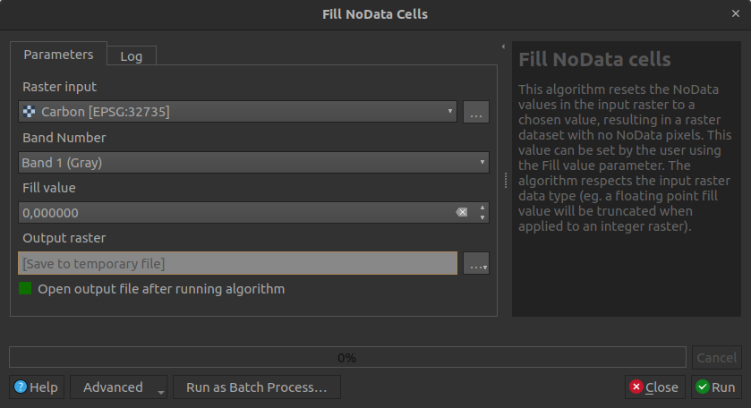
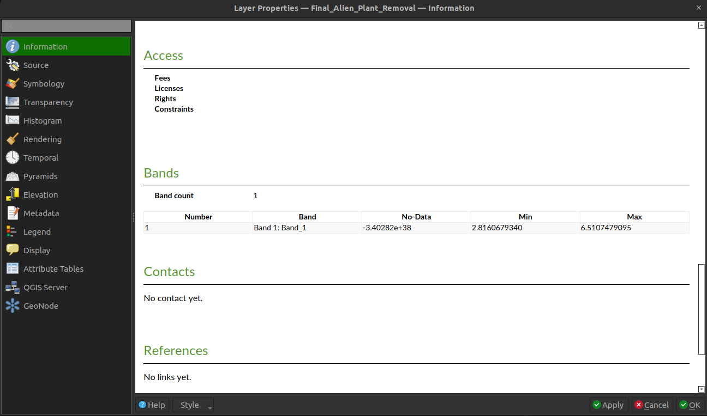
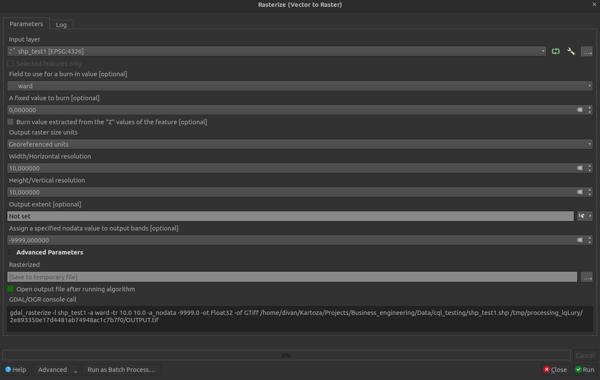

Preparing Data¶
Data preparation is an important step before performing data analysis. This is especially true for spatial data (rasters and vector layers), as many factors play a role in the result. Here are some factors that need to be considered:
-
The data should cover the same spatial extent or overlap each other.
-
Coordinate systems are very important when it comes to the accuracy of your spatial analysis.
For most analysis, a projected coordinate system (e.g. UTM, Albers Equal Area Conic, South African LO-system, etc.) is preferred, but also mandatory for the input raster datasets, above a geographic coordinate system (WGS84, Hartebeesthoek84, etc.). This is because calculating distances and areas is much more accurate with projected coordinate systems.
-
The best practice will be to make use of the same coordinate system for each layer. Having a geographic coordinate for some layers, and projected coordinate systems for others, can have negative impacts on your results.
-
When working with rasters, be sure that the
nodatavalue is set correctly, otherwise, thenodatavalue will be unknown during analysis and will be considered as a normal pixel value. This value should be -9999. -
The plugin can only work with raster layers. If you have data in vector format, convert it to raster. The only applied vector datasets are the masking layers.
-
Any outlier values need to be removed from the spatial data before performing analysis.
Taking into account the above can greatly improve the analysis and the results produced from the analysis. This section will further deal with how to prepare your data using tools available in QGIS.
-
Click Processing -> Toolbox to open the QGIS toolbox.
-
The toolbox will be used for each section.
Priority weighted layers¶
Priority weighted layers (PWL) should not contain any nodata values. If the nodata pixels
are not removed from the rasters, the user's analysis will be less efficient and likely result in a reduction in
results (e.g. all nodata pixels will end up as nodata). Figure 1 shows a Carbon raster with nodata pixels.
Figure 1: Raster with nodata pixels
Follow these easy steps to remove nodata pixels from a raster:
-
In the toolbox search, type "fill
nodata". -
Open the tool Fill
nodatacells. -
Provide the parameters as follows:
- Raster input: Raster layer with
nodatapixels which should be removed - Fill value: Zero should suffice for most cases
- Output raster: Directory to which the filled raster should be stored
- Raster input: Raster layer with

Figure 2: QGIS Fill nodata cells
- Click Run
Figure 3 shows a nodata filled raster.
Figure 3: Raster with nodata pixels removed/filled
Coordinate systems¶
Fix layers with an undefined CRS¶
Sometimes a spatial dataset might not have its coordinate system defined. This can cause issues and needs to be resolved before performing analysis. An unknown coordinate system can be identified as follows:
- Open the layer in QGIS.
- QGIS will show a warning next to the layer.
- This warning will explain that the coordinate system is not defined.
Figure 4: Unknown CRS for a layer in QGIS
- Further investigation can be done by right-clicking on the layer and selecting Properties
- Click on the Information tab
- Scroll down to Coordinate Reference System (CRS)
- Unknown will be shown if the CRS is not set
Figure 5: QGIS layer properties
To define the CRS, do the following:
- Type "assign projection" in the toolbox search.
-
Open the Assign Projection tool in the Raster Projections section.
- If it's a vector layer, open the Assign Projection tool in the Vector general section.
-
Set the parameters as follows:
- Input layer: Layer which has an undefined CRS.
- Desired CRS: CRS which the layer coordinates are using.
-
Click Run.
- Check if the layer is at its correct position in the QGIS canvas.
Figure 6: QGIS Assign projection tool
Be sure you are using the correct coordinate system when defining an unknown coordinate system to a layer. If the incorrect coordinate system is selected, the data will likely not be at the correct position spatially.
Reprojecting (Warping)¶
- The best will be to convert each dataset in a geographic coordinate system to a projected coordinate system.
- Type warp in the QGIS toolbox search.
- Under Raster projections, select Warp.
Figure 7: QGIS Warp tool
-
Provide the following parameters:
- Input layer: Layer the user wants to reproject.
- Source CRS: Current CRS of the layer.
- Target CRS: The CRS to what the layer should be projected.
- Resampling method to use: Nearest Neighbour. Using other options will change pixel values, which we don't want.
nodatavalue: Leave empty, except if the user wants to change thenodatavalue.- Reprojected: The output file.
-
Click Run.
- Do this for all geographic coordinate system rasters.
- As mentioned above, the best will be for all layers to make use of the same coordinate system.
nodata value¶
If a nodata value for a raster is not set correctly, it will be considered as a pixel value which is part of the analysis. This can have a negative impact on the analysis results.
How to check if a raster's nodata is set correctly?
- Right-click on the raster in QGIS.
- Select Properties.
- Select the Information tab.
- Scroll down to the Bands section.
- Under No-data there should be a value i.e. -9999
- If there is no value, this means that the
nodatais not set correctly and therefore needs to be fixed.

Figure 8: Layer properties to check for nodata value
To fix a nodata issue, do the following:
- Type Translate in the toolbox search.
- Open the Translate tool under Raster Conversion.
Figure 9: QGIS Translate tool
- Provide the following parameters:
- Input layer: Raster layer.
- Assign a specific
nodatavalue to output bands: Provide a desired value here. -9999 will suffice for most cases. - Converted: Output raster.
This should solve a nodata issue with a raster. The Translate tool is to convert a raster to another format, but the user can still make use of the same format. This tool is useful to correctly set nodata values when needed.
Outlier pixels/values¶
A user must check if the raster data only includes pixel values within the range it should be. If there are any pixel values outside the range of accepted values, those pixels need to be removed. This can be accomplished using the Reclassify by table tool.
-
Type reclassify by table in the QGIS toolbox search.
-
Select the Reclassify by table tool.
-
Set the parameters as follows:
- Raster layer: Layer to be reclassed.
- Band number: Like the first band.
- Reclassified raster: Output raster.
- Reclassification table: Rules for the reclassification (explanation follows).
Figure 10: QGIS Reclassify by Table tool
-
Open the Reclassification table so that the user can set the value of the reclassification. At least one row needs to be provided.
-
Click Add Row.
-
Provide a Minimum and Maximum value. Consider the following:
- The minimum must be less than the maximum if providing a range.
- If only a single value needs to be reclassified, set the Minimum and Maximum to the same value.
-
Set the new Value for each row:
- Value has to be numeric.
- If a user wants to remove a pixel/value from the analysis, the value needs to be set to the
nodatavalue of the raster (e.g. -9999). See the above section on thenodatavalue on how to find thenodatavalue of a raster.

Figure 11: Reclassify table
- Click Run.
- An example of the resulting raster compared to the original raster is shown in Figure 12.
Figure 12: Reclassified raster compared to the original raster
Vector to raster¶
As mentioned above, the plugin can only work with raster layers. But often a user might have some data in vector format. This can easily be resolved by converting the vector layer to a raster, which can then be used as input to the plugin. Firstly, we want to convert the vector layer to make use of the same projected coordinate system as other data. This can be done as follows:
- Type
Reproject layerin the QGIS toolbox search. - Select the
Reproject layertool in the 'Vector general' section.
Figure 13: QGIS Reproject tool for vector layers
-
Set the parameters as follows:
- Input layer: Vector layer that needs to be reprojected.
- Target CRS: Coordinate system to which the layer should be reprojected, preferably a projected coordinate system.
- Reprojected: The output layer.
-
Click Run
Now that the vector layer is in the correct coordinate system, the user can convert the vector layer to a raster:
- Type
rasterizein the QGIS toolbox search. - Select
Rasterize (vector to raster).

Figure 14: QGIS Rasterize tool
-
Set the parameters as follows:
- Input layer: The vector layer to convert to a raster.
- Field to use to burn: Attribute field to use as the raster pixel values.
- A fixed value to burn: A default value for empty fields for a feature. Otherwise, leave as is.
- Output raster size units: Georeferenced units.
- Width and Height: Spatial resolution in meters. If the vector layer is in geographical coordinates, this distance will be degrees, not meters.
- Output extent: Leave as is, except if the user wants to limit the output to an extent
- Assign a specific
nodatavalue to output bands: -9999 will suffice for most cases - Rasterized: The output raster.
-
Click Run.
The user's data should now be ready for analysis.